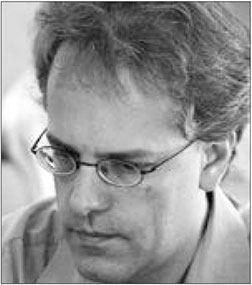

About the author

Herman Grooten is an international master who has worked as a chess trainer for more than 30 years. In this capacity, he has trained many young Dutch talents, privately or on behalf of the Dutch chess federation KNSB. For this federation he is also charged with the education of new trainers. Besides this, he gives chess lessons, lectures and clinics at chess clubs on a private basis.
Grooten has also been active in the area of chess journalism. For seventeen years he wrote the weekly chess column for the national Dutch newspaper Trouw, and for eight years he wrote a chess column in the regional newspaper Het Eindhovens Dagblad. Although nowadays less active as a player, Grooten achieved a grandmaster norm in the Leeuwarden Open, 1995.